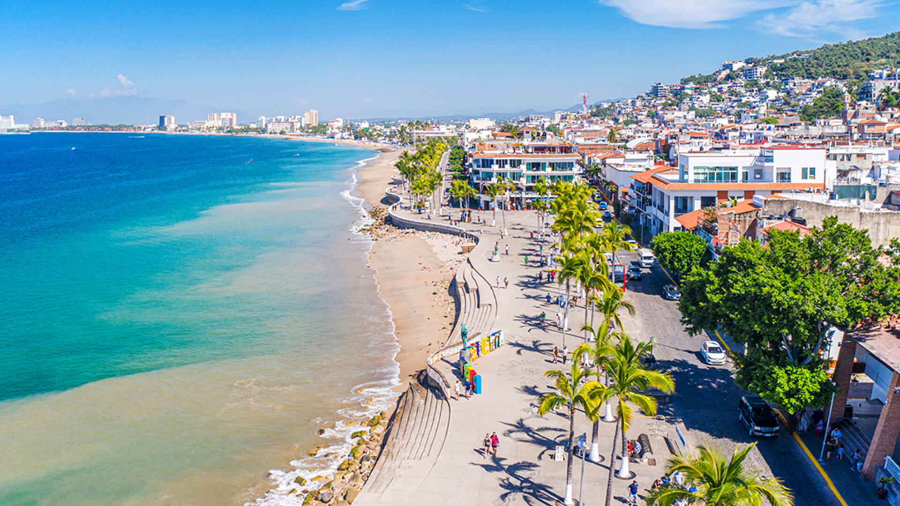
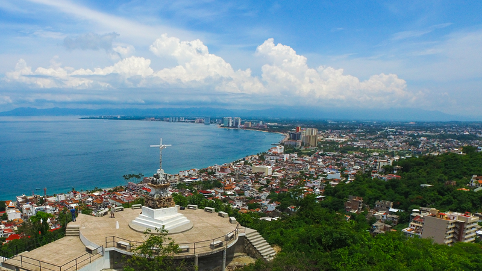
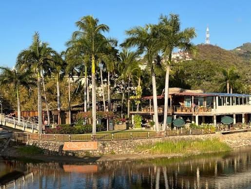

Lugares Turísticos de Puerto Vallarta
Puerto Vallarta cuenta con hermosos lugares turísticos que combinan playas, naturaleza, cultura y paisajes.
Malecón
Es uno de los lugares más representativos de la ciudad, con esculturas, restaurantes, tiendas y hermosos atardeceres.

Los Arcos
Son formaciones rocosas frente a la costa donde se pueden apreciar paisajes marinos y vida marina.

Mirador del Cerro de la Cruz
Ofrece una vista panorámica de Puerto Vallarta y de la bahía.

Isla del Río Cuale
Es un espacio turístico con áreas verdes, artesanías y espacios culturales.

Puerto Vallarta es un destino turístico lleno de playas, naturaleza, cultura y hermosos paisajes. Sus diferentes lugares turísticos lo convierten en un sitio ideal para conocer y disfrutar.